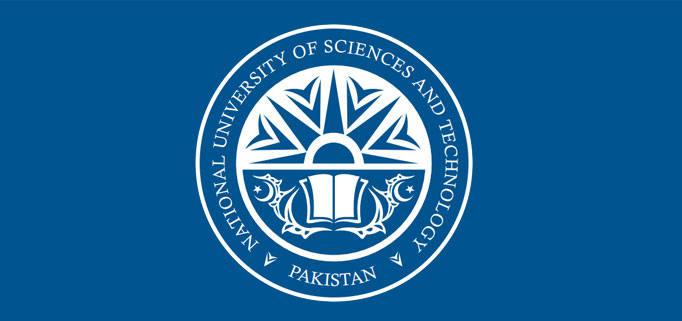

By the grace of Allah Almighty, NUST has come a long way in developing as a comprehensive university on most modern lines.
The University has evolved exceedingly well over a short span of time, and has won enviable prominence both in the country and abroad.
The University offers quality, yet accessible, higher education, not only in the traditional fields, but also in the emerging disciplines
to meet contemporary as well as impending national needs. This is evident from the array of new undergraduate and postgraduate courses being offered in
tandem with the fast-paced infrastructural expansion, to accommodate a substantive increase in student strength.
The web portal is a reflection of what we are and how we mean to achieve our objectives. It endeavours to share with its audience NUST’s range of
disciplines, cherished faculty profile, research pursuits and campus life, to name a few.
I hope that you will find it interesting and informative.
Engr Muhammad Asghar
Rector.
MISSION
To develop NUST as a comprehensive, research-led university with a focus on Technology, Innovation, Entrepreneurship and Community Service
NUST IDENTITY
The Book of Knowledge lights up the darkness, though the Vine of Wisdom which bears the two moons ands stars facing towards the East and the West,
symbolizing the diversity of disciplines and the fruit of knowledge.
The rising sun brings change, hope and enlightenment. It emanates inspiration and from the light of knowledge, four birds take wing from the nests of light,
and spread out to the four corners of the world, symbolizing the quest for spiritual gratification through knowledge and wisdom.
The NUST Blue is a color that represents the future. It carries all the characteristics of the color blue, like dignity, grace, freshness,
professionalism, prudence and resolve.
